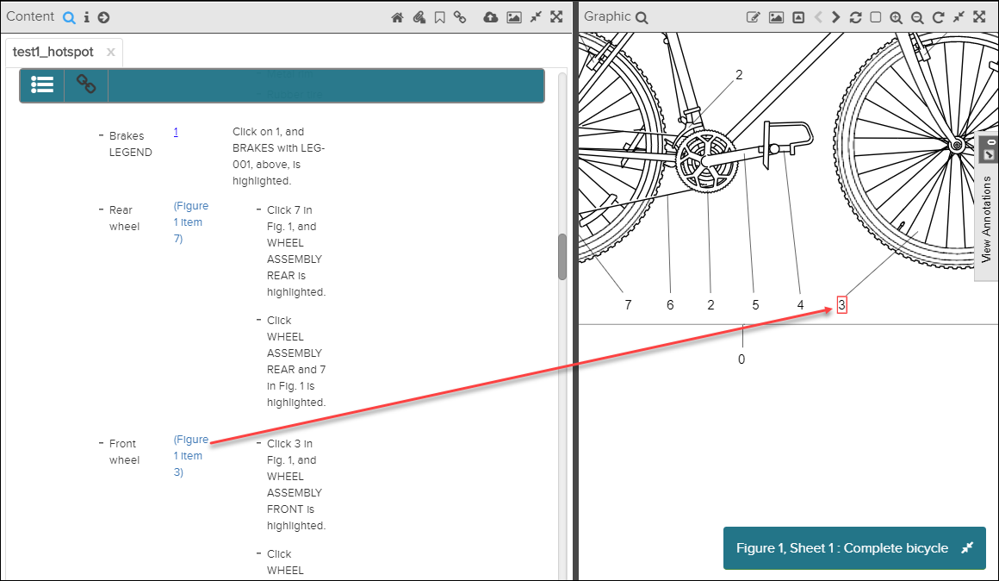
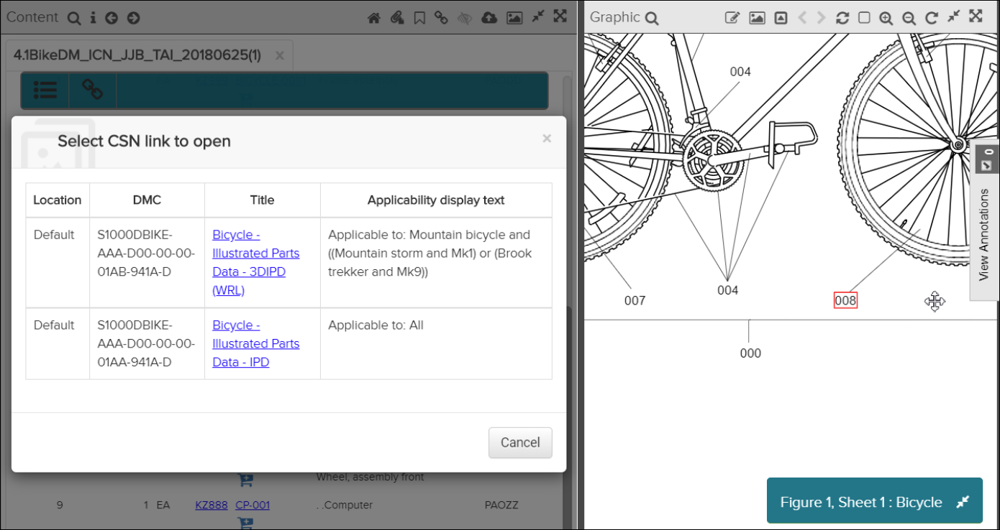

When navigating using hotspot links, you can use the Previous button in the Action Bar to go back to the document/graphic you were viewing. The associated graphic is open with focus on the selected graphic and with the hotspot highlighted.
A text-to-graphic reference is a link in the content that will direct the user to a certain location within a graphic in the same document. When you click on this link, the Graphic pane opens and zooms in on the linked object. The object in the graphic is also highlighted.
In the example below, the "Figure" link in the Content pane links to the object in the graphic:

Text-to-graphic link
An object in a graphic can link to an element within the same document. When clicking on such a link, the Content pane is scrolled to the linked object.

Graphic-to-document - multiple destinations
When clicking on a reference the document will be opened in Content pane.
If you want to return to the previous document, you can click on the Previous button in the Action Bar.